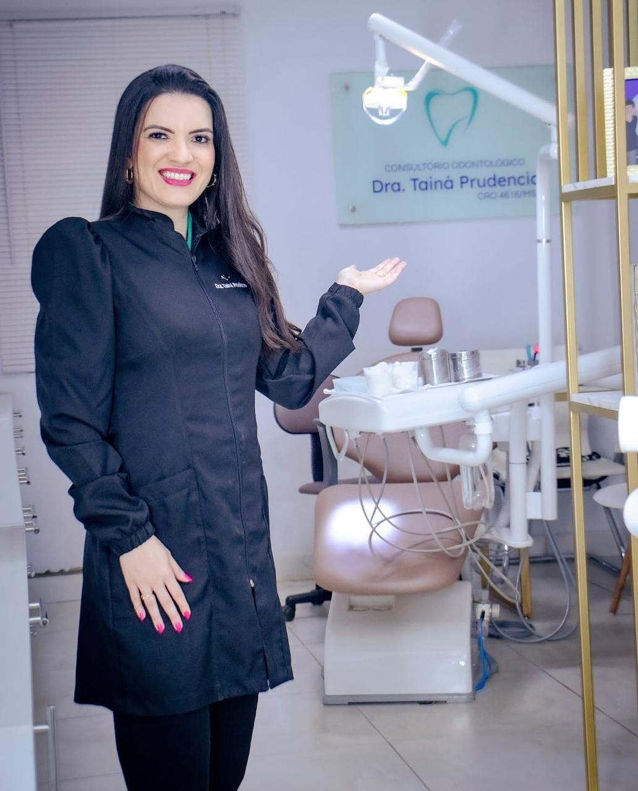
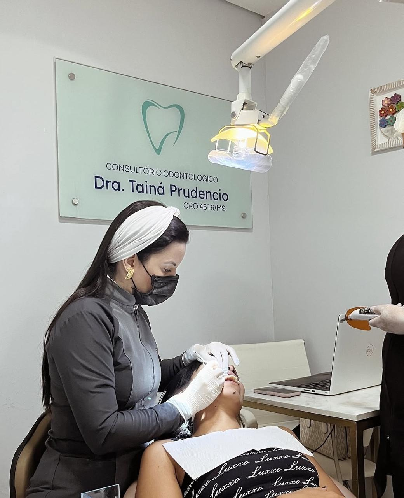
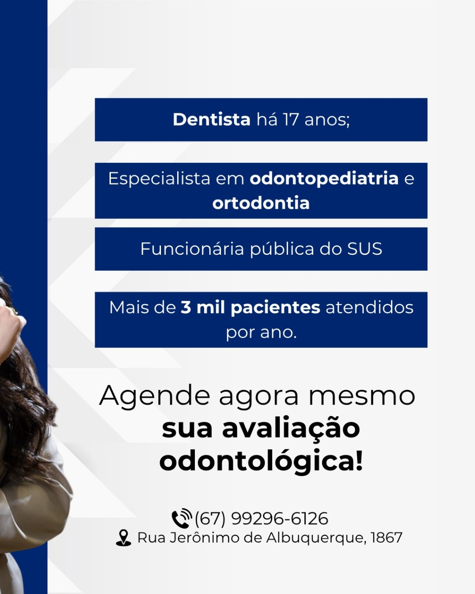
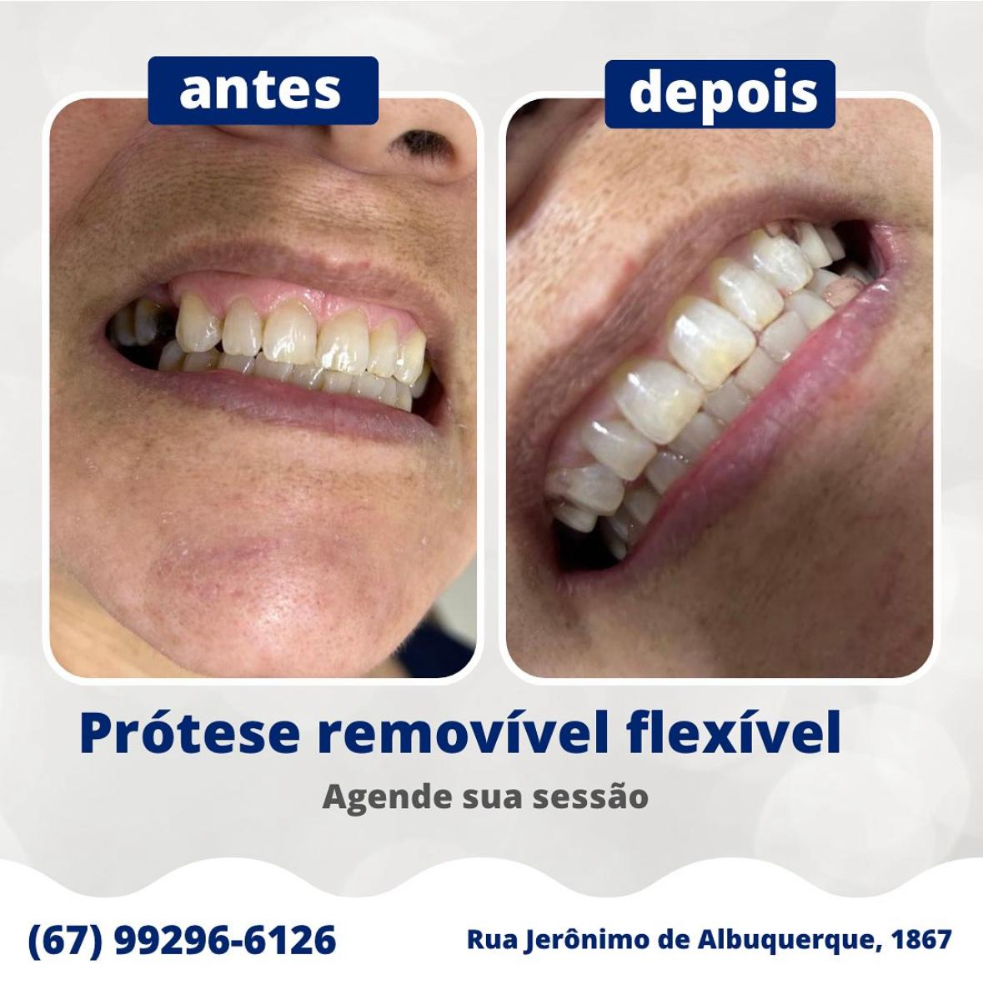

Odontologia humanizada em Nova Lima e região
Seu sorriso merece excelência, cuidado e confiança em cada detalhe.
Há 14 anos atuando na região, a Clínica Odontológica Dra. Tainá Prudêncio une atendimento acolhedor, técnica apurada e foco real na sua qualidade de vida.
17 anos
de experiência em odontologia
+3 mil
pacientes atendidos por ano
- Seg a sex: 8h às 11h30 e 14h às 18h30
- Sábados: 8h às 12h
- Rua Jerônimo de Albuquerque, 1867, Nova Lima - Campo Grande/MS

Atendimento de excelência
Consultas com acolhimento, precisão e cuidado pensado para cada paciente.
CRO 4616/MS
Atendimento ético e responsável
Ortodontia e odontopediatria
Especialidades com olhar humano
Nova Lima e região
Presença consolidada há mais de uma década
Quem cuida do seu sorriso
14 anos
de atuação na região
+3 mil
pacientes atendidos por ano
Foco total
em qualidade de vida e autoestima
Dra. Tainá Prudêncio
Reconhecida pela excelência em atendimento odontológico humanizado, a Dra. Tainá construiu uma trajetória sólida em Nova Lima com um propósito claro: cuidar do sorriso e da autoestima de cada paciente com atenção verdadeira.
Com 17 anos de experiência, especialização em odontopediatria e ortodontia, além de atuação na rede pública, ela reúne conhecimento clínico, escuta atenta e uma abordagem acolhedora que faz o paciente se sentir seguro do começo ao fim.
Tratamentos
Serviços pensados para saúde, função e beleza do sorriso
A clínica oferece soluções personalizadas para diferentes fases da vida, com orientação clara, acompanhamento próximo e decisões clínicas seguras.
01
Ortodontia
Correção do alinhamento dentário com planejamento individual para conforto e resultados consistentes.
02
Odontopediatria
Cuidado acolhedor para crianças, criando experiências positivas e incentivando hábitos saudáveis desde cedo.
03
Próteses odontológicas
Reabilitação funcional e estética, incluindo alternativas como prótese removível flexível para devolver confiança ao sorrir.
04
Clínico geral e prevenção
Consultas de rotina, avaliações completas e cuidados preventivos para manter sua saúde bucal em dia.
05
Estética do sorriso
Tratamentos voltados para harmonia dental, autoestima e naturalidade, sempre respeitando a saúde bucal.
06
Avaliação individualizada
Escuta atenta para entender sua necessidade, explicar as opções de tratamento e indicar o melhor caminho.
Por que escolher a clínica
Um atendimento que combina técnica, acolhimento e confiança
O diferencial está em olhar para cada paciente de forma completa, com carinho no atendimento, clareza nas orientações e tratamentos conduzidos com responsabilidade.
Atendimento humanizado
Mais escuta, mais cuidado e uma experiência tranquila para quem busca segurança no consultório.
Experiência consolidada
Trajetória construída ao longo de anos de atuação na região, com excelência reconhecida pelos pacientes.
Ambiente acolhedor
Espaço preparado para receber bem, transmitir confiança e tornar o tratamento mais leve.
Foco em qualidade de vida
Cada conduta busca melhorar mastigação, estética, conforto e autoestima de forma equilibrada.
Clínica e resultados
Conheça de perto o ambiente e o cuidado aplicado em cada detalhe
Imagens reais da clínica e do trabalho realizado para transmitir a confiança e a seriedade do atendimento.



Agende sua avaliação
Chamar no WhatsApp
Seu próximo sorriso pode começar com uma conversa hoje.
Entre em contato pelo WhatsApp e tire suas dúvidas sobre avaliação, prevenção e tratamentos.
Contato
Estamos prontos para cuidar de você e da sua família
Telefone e WhatsApp
(67) 99296-6126
E-mail
taina.odonto@hotmail.com
Endereço
Rua Jerônimo de Albuquerque, 1867, Nova Lima - Campo Grande/MS, CEP 79017-121
Horários
Seg a sex: 8h às 11h30 e 14h às 18h30 | Sáb: 8h às 12h
Redes sociais